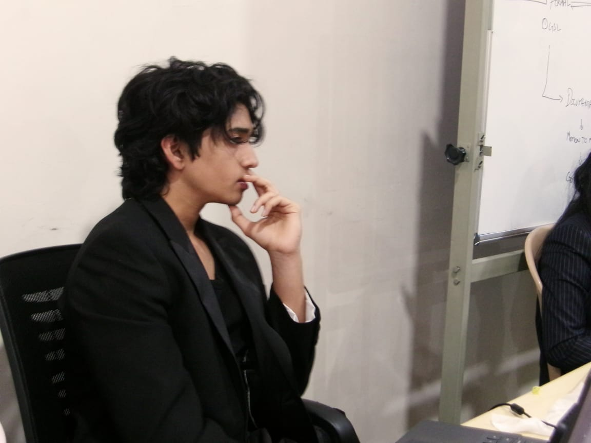
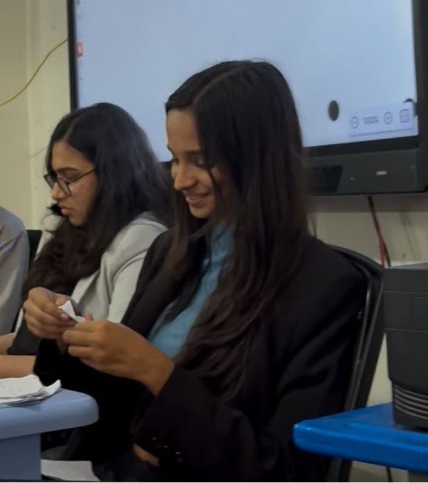

About the Committee
The INTERPOL links law enforcement across 196 member countries. Rather than deploying independent agents to apprehend suspects across borders, Interpol’s true mission is facilitation. It builds the communication channels and data-sharing networks necessary for national police forces to collectively fight international crime.
Agenda
Enhancing International Cooperation to Combat Human Trafficking and Migrant Smuggling.
Background Guide
Download the official background guide for this committee: UNSC Background Guide (PDF)
Executive Board

Co-President: Arnav Turaga
Arnav Turaga is a Class 12 student at PAGE with over three years of experience in the Hyderabad circuit. Having participated across a diverse range of committees, he has developed a strong understanding of diplomacy, debate, and procedural conduct. As a member of the Executive Board, he looks forward to fostering engaging discussions and regulating the highest standard of debate possible, ensuring a productive and enriching experience for all delegates.Beyond academics and MUNs, Arnav is passionate about cricket and also loves to watch any Nolan film. He is looking forward for witnessing brilliant debate and conclusive dialogue!

Co-President: Siri Vaidhula
Siri Vaidhula is a law aspirant with a strong interest in diplomacy and public policy. Having taken on various roles across numerous MUN conferences, she has developed a passion for meaningful debate, collaboration, and engaging with diverse perspectives. She is a Mental Health Ambassador and a certified student researcher, with her work focusing on women- and child-related issues. With a keen interest in global affairs, she enjoys learning from diverse perspectives and contributing to meaningful discussions.